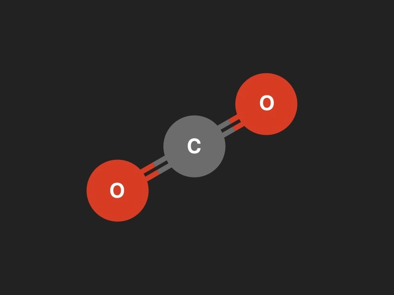
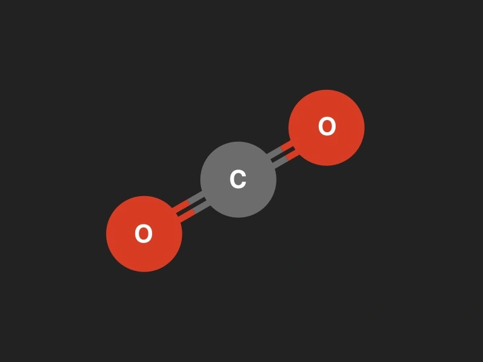

- Inicio
- Mapa
- Benificios
- Aplicaciones
- Efectos
- Preguntas =======
Aplicaciones activas
Mapeo de gases de efecto invernadero
Ver más ======= Ver más >>>>>>> 46cf5dbd9934b9a1fac631b9cc56d1bc473b9834
Mapeo de gases de efecto invernadero
Los gases de efecto invernadero con mayor impacto son:
 =======

>>>>>>> 46cf5dbd9934b9a1fac631b9cc56d1bc473b9834
=======

>>>>>>> 46cf5dbd9934b9a1fac631b9cc56d1bc473b9834
Dióxido de Carbono
Las actividades humanas han aumentado la cantidad de CO2 en la atmósfera en un 50% desde que comenzó la Revolución Industrial
¿Qué es el Dioxido de carbono?Metano
La cantidad de metano en nuestra atmósfera se ha más que duplicado desde la época preindustrial.
¿Qué es el metano?Estudio de propiedades de la nieve
======= >>>>>>> 46cf5dbd9934b9a1fac631b9cc56d1bc473b9834 Ver más
Estudio de propiedades de la nieve
Investigación de Recursos Hídricos
======= >>>>>>> 46cf5dbd9934b9a1fac631b9cc56d1bc473b9834 Ver más
Investigación de Recursos Hídricos
Aplicaciones potenciales
Peligros naturales
======= >>>>>>> 46cf5dbd9934b9a1fac631b9cc56d1bc473b9834 Ver más
Peligros naturales
¿Qué puede hacer EMIT?
Los datos de EMIT podrían permitir la detección de una variedad de peligros naturales y podrían usarse para guiar las estrategias de gestión de desastres
Sequías
Periodos prolongados de escasez de lluvias que pueden causar escasez de agua, afectar la agricultura y causar problemas de abastecimiento de agua.
=======Texto adicional para Sequías.
>>>>>>> 46cf5dbd9934b9a1fac631b9cc56d1bc473b9834Inundaciones
Desbordamiento de ríos, embalses u otras fuentes de agua que inundan áreas circundantes, causando daños a propiedades y vidas.
=======Texto adicional para Sequías.
>>>>>>> 46cf5dbd9934b9a1fac631b9cc56d1bc473b9834Erupciones volcánicas
Explosiones de un volcán que pueden lanzar cenizas, lava y gases, afectando áreas circundantes y causando daños.
=======Texto adicional para Sequías.
>>>>>>> 46cf5dbd9934b9a1fac631b9cc56d1bc473b9834Deslizamiento de tierra
Movimientos de masa de tierra que pueden ocurrir en laderas empinadas y causar daños a propiedades y carreteras.
=======Texto adicional para Sequías.
>>>>>>> 46cf5dbd9934b9a1fac631b9cc56d1bc473b9834Ciclones tropicales
Tormentas intensas que se forman sobre aguas cálidas y pueden provocar fuertes vientos, lluvias torrenciales y marejadas ciclónicas. Incluyen huracanes y tifones.
=======Texto adicional para Sequías.
>>>>>>> 46cf5dbd9934b9a1fac631b9cc56d1bc473b9834Extremos térmicos
Variaciones extremas en las temperaturas, como olas de calor o olas de frío, que pueden tener efectos adversos en la salud y la infraestructura.
=======Texto adicional para Sequías.
>>>>>>> 46cf5dbd9934b9a1fac631b9cc56d1bc473b9834Tormentas,rayos y tornados
Tormentas severas que generan vientos giratorios extremadamente fuertes y destructivos, capaces de causar daños significativos en un área localizada.
=======Texto adicional para Sequías.
>>>>>>> 46cf5dbd9934b9a1fac631b9cc56d1bc473b9834Lluvias intensas
Precipitaciones muy abundantes en un corto período de tiempo, lo que puede provocar inundaciones y deslizamientos de tierra.
=======Texto adicional para Sequías.
>>>>>>> 46cf5dbd9934b9a1fac631b9cc56d1bc473b9834Contaminación ambiental
======= >>>>>>> 46cf5dbd9934b9a1fac631b9cc56d1bc473b9834 Ver más
Contaminación Ambiental
Aguas costeras y proliferación de algas nocivas
======= >>>>>>> 46cf5dbd9934b9a1fac631b9cc56d1bc473b9834 Ver más
Aguas costeras y proliferación de algas nocivas
Los gases de efecto invernadero con mayor impacto son:
=======
>>>>>>> 46cf5dbd9934b9a1fac631b9cc56d1bc473b9834
Dióxido de Carbono
Las actividades humanas han aumentado la cantidad de CO2 en la atmósfera en un 50% desde que comenzó la Revolución Industrial
¿Qué es el Dioxido de carbono?Metano
La cantidad de metano en nuestra atmósfera se ha más que duplicado desde la época preindustrial.
¿Qué es el metano?Seguimiento agrícola
======= >>>>>>> 46cf5dbd9934b9a1fac631b9cc56d1bc473b9834 Ver más
Seguimiento agrícola
¿Qué puede hacer EMIT?

EMIT recopilará datos sobre muchas de las regiones agrícolas del mundo
Dependiendo de la temporada y el manejo de los cultivos, estos datos pueden proporcionar información sobre los tipos de cultivos, la salud y enfermedades de la vegetación, la composición de los residuos de los cultivos y la mineralogía del suelo.
La salud de los cultivos y la producción agrícola son esenciales para mantener la salud humana y las sociedades.
Manejo forestal e incendios
======= >>>>>>> 46cf5dbd9934b9a1fac631b9cc56d1bc473b9834 Ver más
MANEJO FORESTAL E INCENDIOS
¿Qué puede hacer EMIT?
Las tierras forestales, tanto en el oeste de EE. UU. como en todo el mundo, corren un riesgo cada vez mayor de mortalidad debido a sequías, brotes de escarabajos e incendios forestales.
=======Los datos de EMIT podrían usarse para monitorear la salud de los bosques
>>>>>>> 46cf5dbd9934b9a1fac631b9cc56d1bc473b9834los datos de EMIT se pueden utilizar después de un incendio forestal para evaluar la recuperación y monitorear los riesgos actuales
=======Los datos de EMIT podrían usarse para monitorear la salud de los bosques
>>>>>>> 46cf5dbd9934b9a1fac631b9cc56d1bc473b9834Los datos de EMIT podrían usarse para monitorear la salud de los bosques

El albedo es la fracción de luz que refleja una superficie El albedo de la superficie de la Tierra (atmósfera, océano, superficies terrestres) determina cuánta energía solar entrante, o luz, se refleja inmediatamente de regreso al espacio. Esto puede tener un impacto en el clima.
Monitoreo de comunidades vegetales y biodiversidad.
======= >>>>>>> 46cf5dbd9934b9a1fac631b9cc56d1bc473b9834 Ver más
¿Qué puede hacer EMIT?
EMIT recopilará datos sobre muchas de las regiones agrícolas del mundo
Dependiendo de la temporada y el manejo de los cultivos, estos datos pueden proporcionar información sobre los tipos de cultivos, la salud y enfermedades de la vegetación, la composición de los residuos de los cultivos y la mineralogía del suelo.
La salud de los cultivos y la producción agrícola son esenciales para mantener la salud humana y las sociedades.